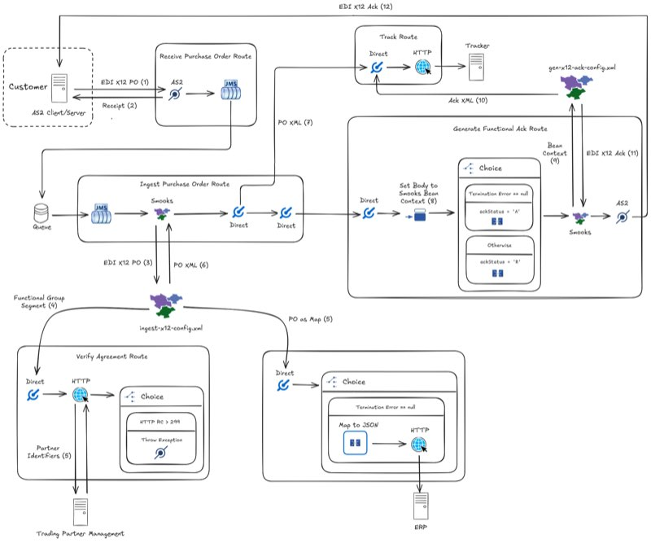

Electronic Data Interchange (EDI) underpins the flow of information in numerous industries. From healthcare, retail, and aviation, to finance, manufacturing, and logistics, EDI is the workhorse carrying billions of transactions across applications in these industries.
Historically viewed as a long, complex and costly journey, connecting EDI to the enterprise is traditionally thought to belong in the realm of expensive proprietary software or organisations with sizeable in-house IT teams. The goal of this blog post is to dispel this perception. I will illustrate how sustainable, mature open-source software can stand up the advanced infrastructure required to integrate EDI with an organisation’s downstream systems. Despite the complexities and nuances of EDI, the end result is a low-code flexible solution that can be run with a single keystroke thanks to Camel JBang.
The open-source frameworks forming the backbone of this EDI integration are Camel and Smooks. Smooks is the engine powering EDI implementations around the world. It is an extensible framework used to build event-driven data integration applications that target structured data (XML, CSV, EDI, binary formats, etc…) with XPath-like selectors to break it up into chunks. Smooks’s ability to transform as well as slice and dice EDI documents together with Camel’s rich palette of connectors means that we have a solid foundation to the integration described next.
Depicted below is a common supply chain transaction flow where (1) a customer transmits an EDI purchase order to a supplier requesting goods or services followed by (2) the supplier acknowledging the transaction. Between receiving the purchase order and acknowledging it, the supplier exchanges bits and pieces of the order with its internal systems.

The Camel application I will showcase exchanges X12 documents, a flavour of EDI, to implement the supplier-side flow. While Smooks ships with out-of-the-box support for EDIFACT, an EDI dialect popular within Europe, X12 is broadly adopted in North America. It is considered one of the more challenging standards to follow, in small part due to its licensed approach in acquiring the guides governing the data exchange. Later on, we will see how one can parse the X12 purchase orders and generate acknowledgements without these implementation guides in hand.
I will break down the above integration into stages in order to comprehend the overall flow (for those hungry to see the solution in action, you can skip the in-depth explanation and follow the repo README instructions to run and test the JBang app):
-
The customer’s system transmits an EDI X12 purchase order in an AS2 message sent over HTTP (HTTP is used for illustration purposes: a production system would typically transmit the AS2 message over HTTPS). The EDI capturing the information in the purchase order would resemble:
ISA*00* *00* *ZZ*ACME *ZZ*MYCORP *071216*1406*U*00204*000000263*1*T*>~ GS*IN*ACME*MYCORP*20071216*1406*000000001*X*004010~ ST*850*0001~ BEG*00*SA*XX-1234**20170301**NA~ PER*BD*ED SMITH*TE*8001234567~ TAX*53247765*SP*CA*********9~ N1*BY*ABC AEROSPACE*9*1234567890101~ N2*AIRCRAFT DIVISION~ N3*2000 JET BLVD~ N4*FIGHTER TOWN*CA*98898~ PO1*1*25*EA*36*PE*MG*XYZ-1234~ MEA*WT*WT*10*OZ~ IT8*******B0~ SCH*25*EA***106*20170615~ CTT*1~ AMT*TT*900~ SE*15*0001~ GE*1*000000001~ IEA*1*000000263~Transporting EDI with AS2, in contrast with transporting EDI with plain HTTPS or FTPS, is appealing for business-to-business exchanges because AS2 offers strong security guarantees such as non-repudiation of receipts.
-
Focusing on the supplier side, the Receive Purchase Order Camel route listening for AS2 messages accepts the message containing the purchase order. This route pushes the X12 document onto a JMS queue. Immediately after, the AS2 listener endpoint delivers a notification to the AS2 client (i.e., the customer) confirming receipt of the message.
-
The Ingest Purchase Order route picks up the X12 document from the queue and sends it to a Smooks endpoint in order to ingest the EDI. The Smooks endpoint references the file
ingest-x12-config.xmlwhich configures Smooks to turn the EDI into a stream of events. Under the hood, Smooks is taking advantage of DFDL for parsing and writing the EDI. DFDL (Data Format Description Language) is an open standard modeling language for describing general text and binary data. Smooks uses DFDL to emit events from EDI. For instance, given the EDI sample shown earlier, Smooks leverages DFDL to emit, conceptually:<interchange> <segment> <segmentId>ISA</segmentId> <dataElement>00</dataElement> <dataElement></dataElement> <dataElement>00</dataElement> <dataElement></dataElement> <dataElement>ZZ</dataElement> <dataElement>ACME</dataElement> <dataElement>ZZ</dataElement> <dataElement>MYCORP</dataElement> <dataElement>071216</dataElement> <dataElement>1406</dataElement> <dataElement>U</dataElement> <dataElement>00204</dataElement> <dataElement>000000263</dataElement> <dataElement>1</dataElement> <dataElement>T</dataElement> <dataElement>></dataElement> </segment> ... ... <segment> <segmentId>IEA</segmentId> <dataElement>1</dataElement> <dataElement>000000263</dataElement> </segment> </interchange>Each emitted event corresponds to a segment or data element within the EDI document. Within
ingest-x12-config.xml, Smooks is configured to bind these events to POJOs using visitors which target the events with selectors. Different visitors then route the POJOs via Camel to (a) verify the document identifiers with a Trading Partner Management system, AND (b) send them to an ERP for purchase order fulfillment. -
The Smooks endpoint produces an XML representation of the EDI purchase order, even if a non-fatal error happens while binding the events or routing the beans. The Ingest Purchase Order route goes on to post this XML to a tracking system for transaction visibility and monitoring purposes.
-
To complete the circle, the Generate Functional Ack route transmits an X12 acknowledgement of the transaction over AS2 to the customer. In particular, the route takes the POJOs, which were derserialised from EDI segments in the previous Smooks execution, and sends them to another Smooks endpoint. This endpoint calls Smooks with the
gen-x12-ack-config.xmlconfig to:- Generate the acknowledgment event stream by materialising an XML template with FreeMarker (a popular template engine),
- Record the acknowledgement via Camel, and
- Serialise the acknowledgement to EDI
We will now dive into the individual YAML routes and Smooks XML configs orchestrating the B2B exchange.
Receive Purchase Order Route
The following route receives the purchase order from the customer:
- routeConfiguration:
id: as2Error
onException:
- onException:
handled:
constant: true
exception:
- java.lang.Exception
steps:
- script:
groovy: |
httpContext = exchangeProperties['CamelAs2.interchange']
httpContext.setAttribute(org.apache.camel.component.as2.api.AS2Header.DISPOSITION_TYPE,
org.apache.camel.component.as2.api.entity.AS2DispositionType.FAILED)
- route:
id: receivePurchaseOrder
routeConfigurationId: as2Error
from:
uri: as2:server/listen
parameters:
serverPortNumber: 8081
requestUriPattern: /mycorp/orders
steps:
- to: jms:queue:edi
The route receivePurchaseOrder has an AS2 endpoint listening for AS2 messages on the URL path /mycorp/orders. The AS2 endpoint will return a successful receipt to the client once the route pushes the purchase order to the JMS queue edi. However, because the route references the as2Error route configuration, a failure receipt will be returned to the client should there be an exception (e.g., broker connection timeout) before the order is placed on to the JMS queue.
Ingest Purchase Order Route
The next route consumes the order from edi queue:
- route:
id: ingestPurchaseOrder
from:
uri: jms:queue:edi
steps:
- to: smooks:file:../smooks/ingest-x12-config.xml
- to: direct:track
- to: direct:genAck
This route sends the order to the Smooks endpoint for translating the EDI into XML. This allows the supplier to track the purchase order. Opening the ingest-x12-config.xml file referenced from the Smooks endpoint reveals the following:
<?xml version="1.0"?>
<smooks-resource-list
xmlns="https://www.smooks.org/xsd/smooks-2.0.xsd"
xmlns:jb="https://www.smooks.org/xsd/smooks/javabean-1.6.xsd"
xmlns:edi="https://www.smooks.org/xsd/smooks/edi-2.0.xsd"
xmlns:camel="https://www.smooks.org/xsd/smooks/camel-1.5.xsd"
xmlns:ftl="https://www.smooks.org/xsd/smooks/freemarker-2.1.xsd"
xmlns:core="https://www.smooks.org/xsd/smooks/smooks-core-1.6.xsd">
<!-- Configures Smooks to tolerate run-time exceptions which allows the EDI to be tracked even when
errors occur -->
<core:filterSettings terminateOnException="false"/>
<!-- Emits an event stream from the EDI input. The 'segmentTerminator' and 'dataElementSeparator' attributes
configure the expected EDI delimiters ('%WSP*;' means zero or more whitespaces while '%NL;' means a newline). The default
schema driving the parsing behaviour is a generic EDI schema written in DFDL but can be overridden with the 'schemaUri'
config attribute -->
<edi:parser segmentTerminator="~%WSP*; %NL;%WSP*;" dataElementSeparator="*"/>
<!-- Runs a pipeline (essentially a nested Smooks execution) on each 'segment' event in order to rewrite the
segments events, making it easier to target the segments we are interested in. The child 'dataElement' events
for the segment being processed are kept in-memory since the 'maxNodeDepth' attribute is set to 0 (i.e., max
possible depth) -->
<core:smooks filterSourceOn="segment" maxNodeDepth="0">
<core:config>
<smooks-resource-list>
<!-- Rewrites the pipeline root event (i.e., the first event which is 'segment') with a custom FreeMarker template such
that it has an attribute called 'segmentId' holding the segment ID. For example:
<segment>...</segment>
becomes
<segment segmentId="ISA">...</segment>
Side note: the EDI parser's underlying DFDL processor doesn't support attributes but the
'core:rewrite' construct allows us to add attributes which permits us to target segments based on
the segment ID rather than on the segment position in the stream -->
<core:rewrite>
<!-- Materialises the FreeMarker template when it encounters the pipeline root event. The template can be
viewed at: https://github.com/apache/camel-jbang-examples/blob/main/edi-x12-as2/ftl/segment-id-attr.xml.ftl -->
<ftl:freemarker applyOnElement="#document">
<ftl:template baseDir="../ftl">segment-id-attr.xml.ftl</ftl:template>
</ftl:freemarker>
</core:rewrite>
<!-- Binds the segment event having the segmentId attribute ISA' to a HashMap named 'isa' -->
<jb:bean beanId="isa" class="java.util.HashMap" createOnElement="segment[@segmentId = 'ISA']" retain="true">
<jb:value property="interchangeSenderIdQualifier" data="#/dataElement[5]"/>
<jb:value property="interchangeSenderId" data="#/dataElement[6]"/>
<jb:value property="interchangeReceiverIdQualifier" data="#/dataElement[7]"/>
<jb:value property="interchangeReceiverId" data="#/dataElement[8]"/>
<jb:value property="interchangeControlNumber" data="#/dataElement[13]"/>
</jb:bean>
<!-- Binds the segment event having the segmentId attribute 'GS' to a HashMap named 'gs' -->
<jb:bean beanId="gs" class="java.util.HashMap" createOnElement="segment[@segmentId = 'GS']" retain="true">
<jb:value property="functionalIdCode" data="#/dataElement[1]" />
<jb:value property="applicationSenderCode" data="#/dataElement[2]" />
<jb:value property="applicationReceiverCode" data="#/dataElement[3]" />
<jb:value property="groupControlNumber" data="#/dataElement[6]" />
</jb:bean>
<!-- Sends the bean 'gs' to the 'direct:tpm' Camel endpoint when the segment attribute is 'GS' -->
<camel:route beanId="gs" routeOnElement="segment[@segmentId = 'GS']">
<camel:to endpoint="direct:tpm"/>
</camel:route>
<!-- Binds the segment event having the segmentId attribute 'PO1' to a HashMap named
'purchaseOrder' -->
<jb:bean beanId="purchaseOrder" class="java.util.HashMap" createOnElement="segment[@segmentId = 'PO1']" retain="true">
<jb:value property="quantityOrdered" data="#/dataElement[2]" />
<jb:value property="totalAmount" data="segment[@segmentId = 'AMT']/dataElement[2]" />
<jb:expression property="status" initVal="'open'"/>
<jb:expression property="priority" initVal="'standard'"/>
</jb:bean>
<!-- Sends the bean 'purchaseOrder' to the 'direct:erp' Camel endpoint when the segment attribute is
equal to 'AMT' -->
<camel:route beanId="purchaseOrder" routeOnElement="segment[@segmentId = 'AMT']">
<camel:to endpoint="direct:erp"/>
</camel:route>
<!-- Binds the segment event having the segmentId attribute 'ST' to a HashMap named 'st' -->
<jb:bean beanId="st" class="java.util.HashMap" createOnElement="segment[@segmentId = 'ST']"
retain="true">
<jb:value property="transactionSetIdentifier" data="#/dataElement[1]" />
</jb:bean>
</smooks-resource-list>
</core:config>
</core:smooks>
</smooks-resource-list>
The comments in the above Smooks config unpack the EDI processing step by step. Nevertheless, it is worth highlighting that:
- Apart from translating the EDI, Smooks takes advantage of Camel’s routing from within the Smooks config to transport individual EDI segments to the supplier’s downstream systems.
- The beans Smooks create are retained (but not accumulated) in the bean context. A number of these beans are referenced from a separate Smooks config when generating the acknowledgement.
- Besides producing an XML representation of the inbound EDI in the message body, the Smooks endpoint adds the Smooks execution context to the Camel message headers. As we will see later on, the execution context is used in the
generateFunctionalAckroute to retrieve the bean context and, from it, generate the acknowledgement.
In the XML config, a Smooks visitor is configured to send the gs bean, capturing the Functional Group Header segment, to the direct:tpm endpoint. The subsequent route receives the EDI segment from direct:tpm:
Verify Agreement Route
- route:
id: verifyAgreement
from:
uri: direct:tpm
steps:
- toD:
uri: "http://{{tpm.address}}"
parameters:
sender: ${body['applicationSenderCode']}
receiver: ${body['applicationReceiverCode']}
httpMethod: GET
- choice:
when:
- simple: ${headers.CamelHttpResponseCode} == 200
steps:
- throwException:
exceptionType: org.apache.camel.edi.example.InvalidPartnerException
The verifyAgreement route is transmitting properties from the gs bean as query parameters in an HTTP call to an external verification service. The applicationReceiverCode and applicationReceiverCode properties map to the Functional Group Header data elements which identify the trading parties by code. Typically, these codes should be verified. Our use case assumes a Trading Partner Management (TPM) solution is available for verifying the codes. Notice that any non-200 HTTP status code originating from the TPM will lead to the route throwing an exception. Needless to say, it is fairly easy to implement fine-grained error handling depending on one’s requirements.
Besides the gs bean, another visitor is routing the purchaseOrder bean to direct:erp. purchaseOrder captures some X12 segments which are important for fulfilling the order and is processed by the following route:
Create ERP Order Route
- route:
id: createErpOrder
from:
uri: direct:erp
steps:
- choice:
when:
- simple: ${headers.CamelSmooksExecutionContext.getTerminationError} == null
steps:
- marshal:
json: {}
- to:
uri: "http://{{erp.address}}/purchase_orders"
parameters:
httpMethod: POST
createErpOrder checks whether there were any errors during the Smooks execution, and if not, marshals the bean to JSON before sending the serialised bean to the supplier’s ERP system. The JSON transformation and bean content are deliberately kept simple, but in the real-world, it will likely be more complicated than what is shown.
Let us return the ingestPurchaseOrder route which called the Smooks endpoint. As mentioned before, the endpoint produces an XML body that ingestPurchaseOrder sends to the subsequent route:
Track Route
- route:
id: track
from:
uri: direct:track
steps:
- setHeader:
name: Content-Type
constant: application/xml
- to:
uri: "http://{{tracker.address}}"
parameters:
httpMethod: POST
track route delivers the XML payload to a tracking system, essentially a data store. The business would use such a system to diagnose errors, perform analytics, build reports, populate dashboards, and so on. As in the createErpOrder route, this route omits steps like further transformation for the sake of brevity.
The final stage to our integration is generating as well as transmitting the business acknowledgement to the customer. In this stage, ingestPurchaseOrder sends a message to direct:genAck which includes the Smooks execution context in one of its headers. Here is the route receiving the message from direct:genAck and which goes on to generate the acknowledgement, track it, and deliver it to the customer using AS2:
Generate Functional Ack Route
- route:
id: generateFunctionalAck
from:
uri: direct:genAck
steps:
- setBody:
groovy: new org.smooks.io.source.JavaSource([*:headers.CamelSmooksExecutionContext.beanContext.beanMap])
- choice:
when:
- simple: ${headers.CamelSmooksExecutionContext.getTerminationError} == null
steps:
- transform:
groovy: body.with {beans.ackStatus = 'A'; body}
otherwise:
steps:
- transform:
groovy: body.with {beans.ackStatus = 'R'; body}
- to: smooks:file:../smooks/gen-x12-ack-config.xml
- to:
uri: as2:client/send
parameters:
targetHostName: "{{partner.host.name}}"
targetPortNumber: 8081
ediMessageContentType: application/edi-x12;charset=US-ASCII
as2To: acme
as2From: mycorp
from: bob@example.org
requestUri: /acme/gateway
subject: Purchase Order Ack
as2MessageStructure: PLAIN
inBody: ediMessage
-
The first step in the preceding route sets the message body to a Smooks
JavaSource. The source is holding the bean context created from the previous Smooks execution. Bear in mind that Smooks stashes away the beans, such as theisaandstbeans, inside the bean context. -
After the
setBodystep, the route adds to theJavaSourcebody a status (i.e.,ackStatus) denoting whether an error occurred during the Smooks execution. FreeMarker inserts the status into the acknowledgement it generates from the template referenced in the next Smooks config. This status informs the customer whether the business transaction succeeded. -
The
JavaSourceis fed to Smooks through thesmooksendpoint. The../smooks/gen-x12-ack-config.xmlendpoint parameter points to the subsequent Smooks config:<?xml version="1.0"?> <smooks-resource-list xmlns="https://www.smooks.org/xsd/smooks-2.0.xsd" xmlns:edi="https://www.smooks.org/xsd/smooks/edi-2.0.xsd" xmlns:camel="https://www.smooks.org/xsd/smooks/camel-1.5.xsd" xmlns:ftl="https://www.smooks.org/xsd/smooks/freemarker-2.1.xsd" xmlns:core="https://www.smooks.org/xsd/smooks/smooks-core-1.6.xsd"> <!-- Prevents Smooks from emitting an event stream from the 'JavaSource' --> <reader> <features> <setOff feature="http://www.smooks.org/sax/features/generate-java-event-stream" /> </features> </reader> <!-- Exports the EDI result as a string instead of the default output stream since the outbound AS2 Camel endpoint does not handle output streams --> <core:exports> <core:result type="org.smooks.io.sink.StringSink"/> </core:exports> <!-- Runs a pipeline to replace the result event stream with the EDI stream emitted from within the pipeline. Prior to being replaced, the result stream in this execution consists of a single "stub" event because event streaming is disabled --> <core:smooks filterSourceOn="#document"> <!-- Configures the pipeline to replace current event stream with the event stream emitted from the nested <smooks-resource-list>...</smooks-resource-list> --> <core:action> <core:inline> <core:replace/> </core:inline> </core:action> <core:config> <smooks-resource-list> <!-- Emits an intermediate event stream from a FreeMarker XML template. This template references the 'isa', 'gs', 'st', and 'ackStatus' beans from the input `JavaSource` to materialise the acknowledgement. The template can be viewed at https://github.com/apache/camel-jbang-examples/blob/main/edi-x12-as2/ftl/x12-ack.xml.ftl --> <core:rewrite> <!-- Materialises the FreeMarker template when visiting the root event (i.e., stub event) --> <ftl:freemarker applyOnElement="#document"> <ftl:template baseDir="../ftl">x12-ack.xml.ftl</ftl:template> </ftl:freemarker> </core:rewrite> <!-- Runs a pipeline on the acknowledgement event stream in order to serialise the stream to XML and bind this XML to the bean 'x12AckAsXml' --> <core:smooks filterSourceOn="#document"> <core:action> <core:bindTo id="x12AckAsXml"/> </core:action> </core:smooks> <!-- Sends the 'x12AckAsXml' bean to the Camel endpoint 'direct:track' --> <camel:route beanId="x12AckAsXml" routeOnElement="#document"> <camel:to endpoint="direct:track"/> </camel:route> <!-- Uses the default DFDL schema to serialise the event stream to EDI. The 'unparseOnNode' attribute is set to a wildcard to serialise all emitted events while 'segmentTerminator' and 'dataElementSeparator' are set to the delimiters to write out ('%NL;' means a newline) --> <edi:unparser segmentTerminator="~%NL;" dataElementSeparator="*" unparseOnNode="*"/> </smooks-resource-list> </core:config> </core:smooks> </smooks-resource-list>As explained in the config comments above, Smooks is configured to produce an X12 acknowledgement for Camel. Additionally, it creates a side-channel to Camel in order to track the XML acknowledgement.
-
The final step in
generateFunctionalAckand in this integration is the delivery of the EDI acknowledgement to the customer’s AS2 server. Note: error handling logic for the AS2 message delivery has been left out for the sake of brevity.The AS2 server receives an acknowledgement from the supplier such as the one shown below:
ISA*00* *00* *ZZ*MYCORP *ZZ*ACME *250130*1842*U*00204*000000264*1*T*>~ GS*FA*MYCORP*ACME*20250130*184236*000000001*X*004010~ ST*997*0001~ AK1*850*000000001~ AK9*A~ SE*4*0001~ GE*1*000000001~ IEA*1*000000264~
This concludes my brief tour of EDI integration with Camel. What I have showcased challenges the narrative that production-grade EDI middleware can only be built upon closed-source solutions. In fact, I have only scratched the surface of what Camel and Smooks can accomplish together, with EDI and beyond. Read the instructions in the project’s repo to give the demonstrated JBang app a whirl. Do not forget to head over to the Smooks user guide to learn more about Smooks. Have feedback or need help on Smooks (better still, want to contribute)? Drop a message in the Smooks user forum.